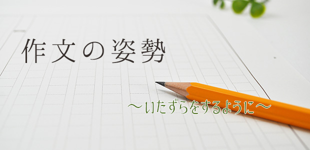

先日、塾で担当している小学生の作文を大量に読む機会がありましたが、改めていろいろと考えさせられる体験でした。受験においていわゆる「記述力」が求められるようになってからかなり経ちます。実際に記述小論文を教える立場として、これまでもいろいろな試みをしてきましたが、なかなかうまくいきません。
文章を書くためのテクニックはそこまで問題ではありません。時間をある程度掛ければ生徒たちはみな「そこそこ」読める文章を書けるようになります。
本当に問題なのは、「姿勢」なのです。文章を書くということは、ただ原稿用紙のマス目を埋める行為ではありません。文章を通じて読者に対して何らかのメッセージを伝えることです。しかし、小さな頃から課されてきたいわゆる「学校的な作文」を通じてその姿勢は摩耗し、生徒たちは作文をただこなすべき課題としてしか捉えられなくなっているのです。
いたずらをするように
私は生徒たちによく「いたずらをするように書きなさい」と伝えます。いたずらをするとき、あるいはしようと計画を練っているとき、私たちは必ず相手の驚いた顔を思い浮かべているはずです。私自身を振り返ってみても、小学生のころ、教室の出入り口のドアの上に黒板消しを挟むセッティングをしながら、先生の驚く顔を思い浮かべていました。
文章もそれと同じです。読んだ相手をいかに驚かせ、気を引くことができるか。読者に「読んでほしい」と思う姿勢がすべての核になります。生徒がまだ幼い場合、突飛なことを書き出して収拾がつかなくなってしまうことも多々ありますが、それでも予定調和のひからびた文章よりもよほど将来性があります。
保護者の中には、お子さんの作文を読まれて「めまい」を感じてしまう方もいらっしゃるかもしれません。漢字は書けていないし、文章は支離滅裂だし、と大人の視点で見ればとても「へたくそ」に見えるかもしれません。しかし、見るべきポイントはテクニカルなところではありません。書いた子どもがなにかを伝えようとしているか。そこを見てみてください。伝えようとする姿勢があれば何の問題もありません。時間とともにクオリティはどんどん上がっています。伝える気がない定型文の連なりになっていたとしたら、そのときこそアドバイスをしてあげてほしいと思います。